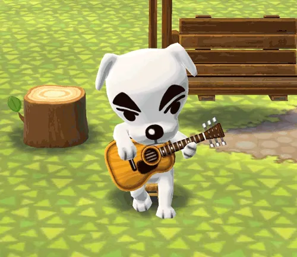
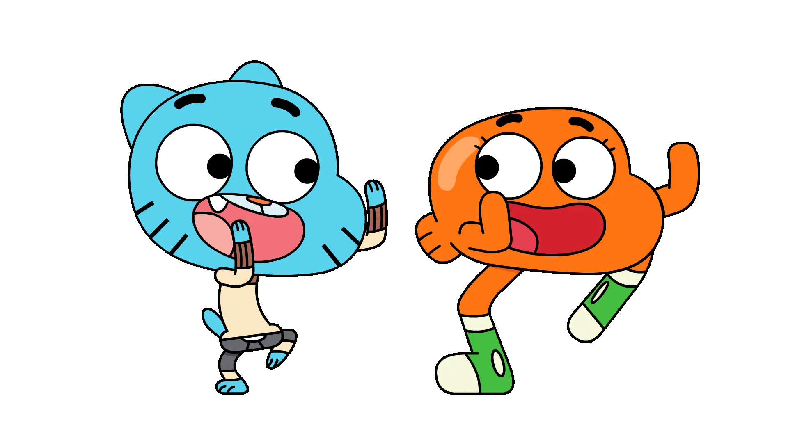
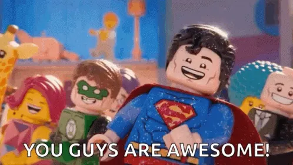

Relaxing Animal Crossing vibes, K.K. Slider music, and village friends.

High energy, funky beats, and party animations with colorful themes!

Build sentences brick-by-brick in a bright, colorful Lego world!